木块砌墙
作者：July、caopengcs、红色标记。致谢：fuwutu、demo。
时间：二零一三年八月十二日
题目：用 1×1×1, 1×2×1以及2×1×1的三种木块（横绿竖蓝，且绿蓝长度均为2），

搭建高长宽分别为K × 2^N × 1的墙，不能翻转、旋转（其中，0<=N<=1024，1<=K<=4）

有多少种方案，输出结果
对1000000007取模。
举个例子如给定高度和长度：N=1 K=2，则答案是7，即有7种搭法，如下图所示：

详解：此题很有意思，涉及的知识点也比较多，包括动态规划，快速矩阵幂，状态压缩，排列组合等等都一一考察了个遍。而且跟一个比较经典的矩阵乘法问题类似：即用1 x 2的多米诺骨牌填满M x N的矩形有多少种方案，M<=5，N<2^31，输出答案mod p的结果

OK，回到正题。下文使用的图示说明(所有看到的都是横切面)：
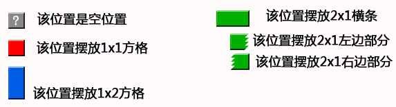
首先说明“？方块”的作用
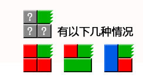
“？方块”，表示这个位置是空位置，可以任意摆放。
上图的意思就是，当右上角被绿色木块占用，此位置固定不变，其他位置任意摆放，在这种情况下的堆放方案数。
解法一、穷举遍历
初看此题，你可能最先想到的思路便是穷举：用二维数组模拟墙，从左下角开始摆放，从左往右，从下往上，最后一个格子是右上角那个位置；每个格子把每种可以摆放木块都摆放一次，每堆满一次算一种用摆放方法。为了便于描述，为木块的每个格子进行编号：
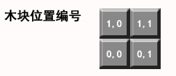
下面演示当n=1,k=2的算法过程（7种情况）：
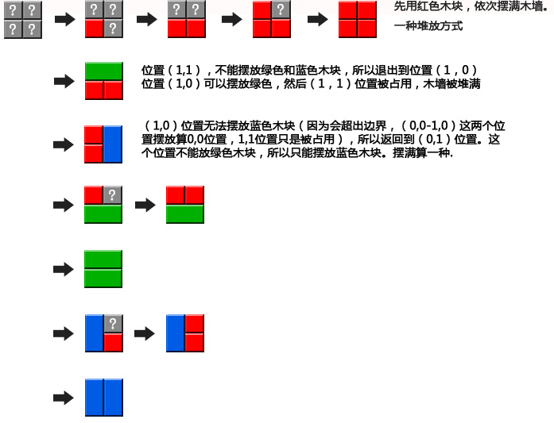
穷举遍历在数据规模比较小的情况下还撑得住，但在0<=N<=1024这样的数据规模下，此方法则立刻变得有心无力，因此我们得寻找更优化的解法。
解法二、递归分解
递归求解就是把一个大问题，分解成小问题，逐个求解，然后再解决大问题。
2.1、算法演示
假如有墙规模为(n,k)，如果从中间切开，被分为规模问(n-1,k)的两堵墙，那么被分开的墙和原墙有什么关系呢？我们首先来看一下几组演示。
2.1.1、n=1，k=2的情况
首先演示，n=1,k=2时的情况，如下图2-1：
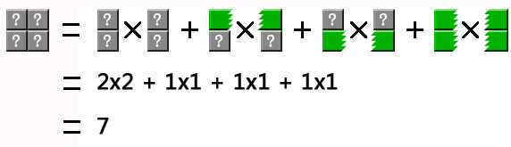
图 2-1
上图2-1中：
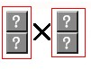
表示，左边墙的所有堆放方案数 右边墙所有堆放方案数 = 2 2 = 4
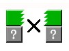
表示，当切开处有一个横条的时候，空位置存在的堆放方案数。左边右边 = 11 = 2；剩余两组以此类推。
这个是排列组合的知识。
2.1.2、n=2，k=3的情况
其次，我们再来演示下面更具一般性的计算分解，即当n=2,k=3的情况，如下图2-2：
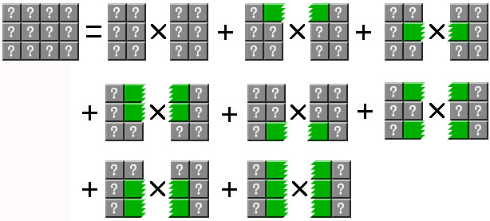
图 2-2
再从分解的结果中，挑选一组进行分解演示：
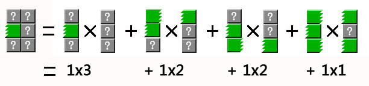
图 2-3
通过图2-2和图2-3的分解演示，可以说明，最终都是分解成一列求解。在逐级向上汇总。
2.1.3、n=4，k=3的情况
我们再假设一堵墙n=4，k=3，也就是说，宽度是16，高度是3时，会有以下分解：
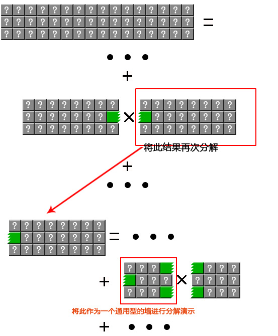
图2-4
根据上面的分解的一个中间结果，再进行分解，如下：

图2-5
通过上面图2-1~图2-5的演示可以明确如下几点：
1.假设f(n)用于计算问题，那么f(n)依赖于f(n-1)的多种情况。
2.切开处有什么特殊的地方呢？通过上面的演示，我们得知被切开的两堵墙从没有互相嵌入的木块（绿色木块）到全是互相连接的木块，相当于切口绿色木块的全排列（即有绿色或者没有绿色的所有排列），即有2^k种状态（比如k=2，且有绿色用1表示，没有绿色用0表示，那么就有00、01、10、11这4种状态）。根据排列组合的性质，把每一种状态下左右木墙堆放方案数相乘，再把所有乘积求和，就得到木墙的堆放结果数。以此类推，将问题逐步往下分解即可。
3.此外，从图2-5中可以看出，除了需要考虑切口绿色木块的状态，还需要考虑最左边一列和最右边一列的绿色木块状态。我们把这两种边界状态称为左边界状态和右边界状态，分别用leftState和rightState表示。
且在观察图2-5被切分后，所有左边的墙，他们的左边界ls状态始终保持不变，右边界rs状态从0~maxState, maxState = 2^k-1（有绿色方块表示1，没有表示0；ls表示左边界状态，rs表示右边界状态）：
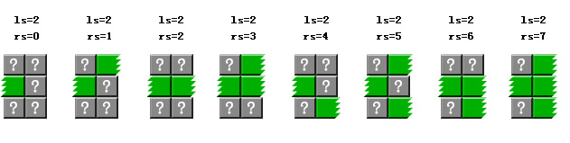
图2-6
同样可以看出右边的墙的右边界状态保持不变，而左边界状态从0~maxState。要堆砌的木墙可以看做是左边界状态=0，和右边界状态=0的一堵墙。
有一点可能要特别说明下，即上文中说，有绿色方块的状态表示标为1，无绿色方块的状态表示标为0，特意又拿上图2-6标记了一些数字，以让绝大部分读者能看得一目了然，如下所示：

图2-7
这下，你应该很清楚的看到，在上图中，左边木块的状态表示一律为010，右边木块的状态表示则是000~111（即从下至上开始计数，右边木块rs的状态用二进制表示为：000 001 010 011 100 101 110 111，它们各自分别对应整数则是：0 1 2 3 4 5 6 7）。
2.2、计算公式
通过图2-4、图2-5、图2-6的分解过程，我们可以总结出下面公式（leftState=最左边边界状态，rightState=最右边边界状态）：
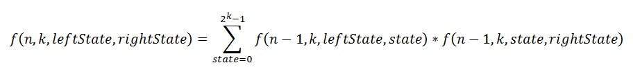
即：
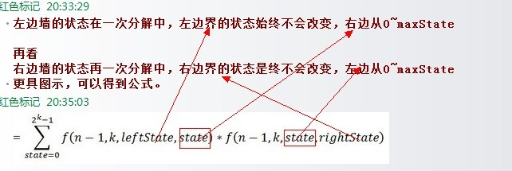
接下来，分3点解释下上述公式：
1、上述函数返回结果是当左边状态为=leftState，右边状态=rightState时木墙的堆砌方案数，相当于直接分解的左右状态都为0的情况，即直接分解f(n,k,0,0)即可。看到这，读者可能便有疑问了，既然直接分解f(n,k,0,0)即可，为何还要加leftstate和leftstate两个变量呢？回顾下2.1.3节中n=4，k=3的演示例子，即当n=4，k=3时，其分解过程即如下图（上文2.1.3节中的图2-4）

也就是说，刚开始直接分解f(4,3,0,0)，即n=4，k=3，leftstate=0，rightstate=0，但分解过程中leftstate和rightstate皆从0变化到了maxstate，故才让函数的第3和第4个参数采用leftstate和rightstate这两个变量的形式，公式也就理所当然的写成了f(n,k,leftstate,rightstate)。
2、然后我们再看下当n=4，k=3分解的一个中间结果，即给定如上图最下面部分中红色框框所框住的木块时：
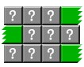
它用方程表示即为 f(2,3,2,5)，怎么得来的呢？其实还是又回到了上文2.1.3节中，当n=2，k=3 时（下图即为上文2.1.3节中的图2-5和图2-6）
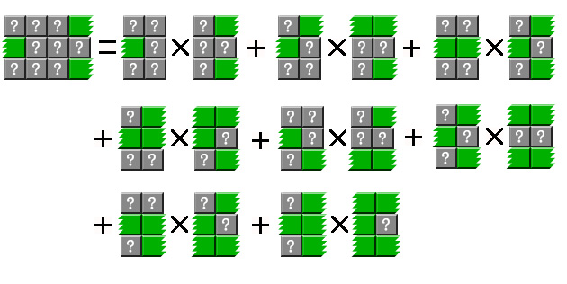

左边界ls状态始终保持不变时，右边界rs状态从0~maxState；右边界状态保持不变时，而左边界状态从0~maxState。
故上述分解过程用方程式可表示为：
f(2,3,2,5) = f(1,3,2,0) * f(1,3,0,5)
+ f(1,3,2,1) * f(1,3,1,5)
+ f(1,3,2,2) * f(1,3,2,5)
+ f(1,3,2,3) * f(1,3,3,5)
+ f(1,3,2,4) * f(1,3,4,5)
+ f(1,3,2,5) * f(1,3,5,5)
+ f(1,3,2,6) * f(1,3,6,5)
+ f(1,3,2,7) * f(1,3,7,5)
说白了，我们曾在2.1节中从图2-2到图2-6正推推导出了公式，然上述过程中，则又再倒推推了一遍公式进行了说明。
3、最后，作者是怎么想到引入 leftstate 和rightstate 这两个变量的呢？如红色标记所说：”因为切开后，发现绿色条，在分开处不断的变化，当时也进入了死胡同，我就在想，蓝色的怎么办。后来才想明白，与蓝色无关。每一种变化就是一种状态，所以就想到了引入leftstate 和rightstate这两个变量。”
2.3、参考代码
下面代码就是根据上面函数原理编写的。最终执行效率，n=1024,k=4 时，用时0.2800160秒（之前代码用的是字典作为缓存，用时在1.3秒左右，后来改为数组结果，性能大增）。””
|
|
上述程序中，
WoolWall.Heap(1024,4); //直接通过静态方法获得结果
new WoolWall(n, k).Heap();//通过构造对象获得结果
2.3.1、核心算法讲解
因为它最终都是分解成一列的情况进行处理，这就会导致很慢。为了提高速度，本文使用了缓存机制来提高性能。缓存原理就是，n,k,leftState,rightState相同的墙，返回的结果肯定相同。利用这个特性，每计算一种结果就放入到缓存中，如果下次计算直接从缓存取出。刚开始缓存用字典类实现，有网友给出了更好的缓存方法——数组。这样性能好了很多，也更加简单。程序结构如下图所示：
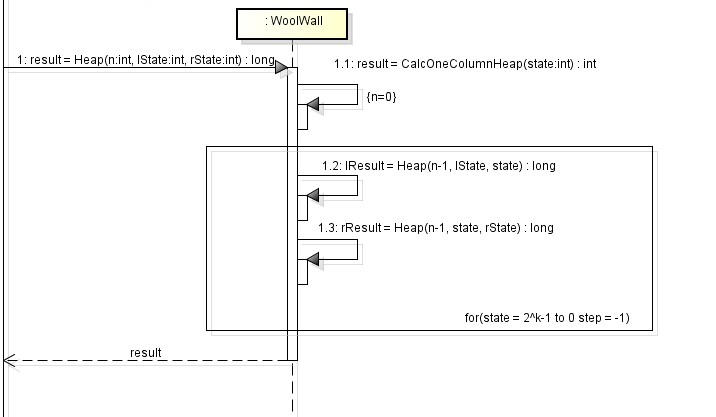
上图反应了Heap调用的主要方法调用，在循环中，result 累加 lResult 和 rResult。
①在实际代码中，首先是从缓存中读取结果，如果没有从缓存中读取结果再进行计算。
分解到一列时，不再分解，直接计算结果
|
|
②下面是整个程序的核心代码，通过for循环，求和state=0到state=2^k-1的两边木墙乘积：
|
|
当n=1切分时，需要特殊考虑。如下图：
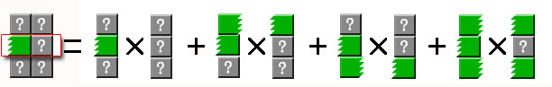
图2-8
看上图中，因为左边墙中间被绿色方块占用，所以在（1,0）-（1,1）这个位置（位置的标记方法同解法一）不能再放绿色方块。所以一些状态需要排除，如state=2需要排除。同时在还需要合并状态，如state=1时，左边墙的状态=3。
特别说明下：依据我们上文2.2节中的公式，如果第i行有这种木块，state对应2^(i-1)，加上所有行的贡献就得到state（0就是没有这种横跨木块，2^k-1就是所有行都是横跨木块），然后遍历state，还记得上文中的图2-7么？
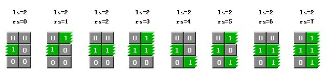
当第i行被这样的木块或这样的木块占据时，其各自对应的state值分别为：
1.当第1行被占据，state=1；
2.当第2行被占据，state=2；
3.当第1和第2行都被占据，state=3；
4.当第3行被占据，state=4；
5.当第1和第3行被占据，state=5；
6.当第2和第3行被占据，state=6；
7.当第1、2、3行全部都被占据，state=7。
至于原因，即如2.1.3节节末所说：二进制表示为：000 001 010 011 100 101 110 111，它们各自分别对应整数则是：0 1 2 3 4 5 6 7。
具体来说，下面图中所有框出来的位置，不能有绿色的：
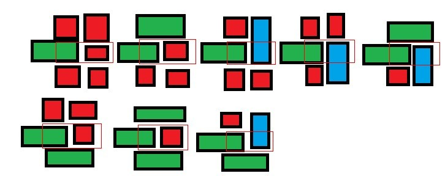
③CalcOneColumnHeap(int state)函数用于计算一列时摆放方案数。
计算方法是， 求和被绿色木块分割开的每一段连续方格的摆放方案数。每一段连续的方格的摆放方案通过CalcAllState方法求得。经过分析，可以得知CalcAllState是类似斐波那契序列的函数。
举个例子如下（分步骤讲述）：
1.令state = 4546（state=2^k-1，k最大为4，故本题中state最大在15，而这里取state=4546只是为了演示如何计算），二进制是：1000111000010。位置上为1，表示被绿色木块占用，0表示空着，可以自由摆放。
2.1000111000010 被分割后 1 000 111 0000 1 0, 那么就有 000=3个连续位置， 0000=4个连续位置 ， 0=1个连续位置。
3.堆放结果=CalcAllState(3) + CalcAllState(4) + CalcAllState(1) = 3 + 5 + 1 = 9。
2.4、再次优化
上面程序因为调用性能的树形结构，形成了大量的函数调用和缓存查找，所以其性能不是很高。 为了得到更高的性能，可以让所有的运算直接依赖于上一次运算的结果，以防止更多的调用。即如果每次运算都算出所有边界状态的结果，那么就能为下一次运算提供足够的信息。后续优化请查阅此文第3节。
解法三、动态规划
相信读到上文，不少读者都已经意识到这个问题其实就是一个动态规划问题，接下来咱们换一个角度来分析此问题。
3.1、暴力搜索不可行
首先，因为木块的宽度都是1，我们可以想成2维的问题。也就是说三种木板的规格分别为1 1, 1 2, 2 * 1。
通过上文的解法一，我们已经知道这个问题最直接的想法就是暴力搜索，即对每个空格尝试放置哪种木板。但是看看数据规模就知道，这种思路是不可行的。因为有一条边范围长度高达2^1024，普通的电脑，2^30左右就到极限了。于是我们得想想别的方法。
3.2、另辟蹊径
为了方便，我们把墙看做有2^n行，k列的矩形。这是因为虽然矩形木块不能翻转，但是我们同时拥有12和21的两种木块。
假设我们从上到下，从左到右考虑每个1*1的格子是如何被覆盖的。显然，我们每个格子都要被覆盖住。木块的特点决定了我们覆盖一个格子最多只会影响到下一行的格子。这就可以让我们暂时只考虑两行。
假设现我们已经完全覆盖了前(i–1)行。那么由于覆盖前(i-1)行导致第i行也不“完整”了。如下图：
xxxxxxxxx
ooxooxoxo
我们用x表示已经覆盖的格子，o表示没覆盖的格子。为了方便，我们使用9列。
我们考虑第i行的状态，上图中，第1列我们可以用11的覆盖掉，也可以用12的覆盖前两列。第4、5列的覆盖方式和第1、2列是同样的情况。第7列需要覆盖也有两种方式，即用11的覆盖或者用21的覆盖，但是这样会导致第（i+1)行第7列也被覆盖。第9列和第7列的情况是一样的。这样把第i行覆盖满了之后，我们再根据第(i+1)行被影响的状态对下一行进行覆盖。
那么每行有多少种状态呢？显然有2^k，由于k很小，我们只有大约16种状态。如果我们对于这些状态之间的转换制作一个矩阵，矩阵的第i行第j列的数表示的是我们第m行是状态i，我们把它完整覆盖掉，并且使得第(m + 1)行变成状态j的可能的方法数，这个矩阵我们可以暴力搜索出来，搜索的方式就是枚举第m行的状态，然后尝试放木板，用所有的方法把第m行覆盖掉之后，下一行的状态。当然，我们也可以认为只有两行，并且第一行是2k种状态的一种，第二行起初是空白的，求使得第一行完全覆盖掉，第二行的状态有多少种类型以及每种出现多少次。
3.3、动态规划
这个矩阵作用很大，其实我们覆盖的过程可以认为是这样：第一行是空的，我们看看把它覆盖了，第2行是什么样子的。根据第二行的状态，我们把它覆盖掉，看看第3行是什么样子的。
如果我们知道第i行的状态为s,怎么考虑第i行完全覆盖后，第(i+1)行的状态？那只要看那个矩阵的状态s对应的行就可以了。我们可以考虑一下，把两个这样的方阵相乘得到得结果是什么。这个方阵的第i行第j个元素是这样得到的，是第i行第k个元素与第k行第j个元素的对k的叠加。它的意义是上一行是第m行是状态i，把第m行和第(m+1)行同时覆盖住，第(m+2)行的状态是j的方法数。这是因为中间第(m+1)行的所有状态k，我们已经完全遍历了。
于是我们发现，每做一次方阵的乘法，我们相当于把状态推动了一行。那么我们要坐多少次方阵乘法呢？就是题目中墙的长度2n,这个数太大了。但是事实上，我们可以不断地平方n次。也就是说我们可以算出A2,A4, A8, A16……方法就是不断用结果和自己相乘，这样乘n次就可以了。
因此，我们最关键的问题就是建立矩阵A。我们可以这样表示一行的状态，从左到右分别叫做第0列，第1列……覆盖了我们认为是1，没覆盖我们认为是0，这样一行的状态可以表示为一个整数。某一列的状态我们可以用位运算来表示。例如，状态x第i列是否被覆盖，我们只需要判断x & (1 << i) 是否非0即可，或者判断(x >> i) & 1， 用右移位的目的是防止溢出，但是本题不需要考虑溢出，因为k很小。 接下来的任务就是递归尝试放置方案了
3.4、参考代码
最终结果，我们最初的行是空得，要求最后一行之后也不能被覆盖，所以最终结果是矩阵的第[0][0]位置的元素。另外，本题在乘法过程中会超出32位int的表示范围，需要临时用C/C++的long long，或者java的long。
参考代码如下：
|
|
参考链接及推荐阅读
- caopengcs，木块砌墙
- 红色标记，木块砌墙
- LoveHarvy，木块砌墙
- 在线编译测试木块砌墙问题
- hero上木块砌墙一题